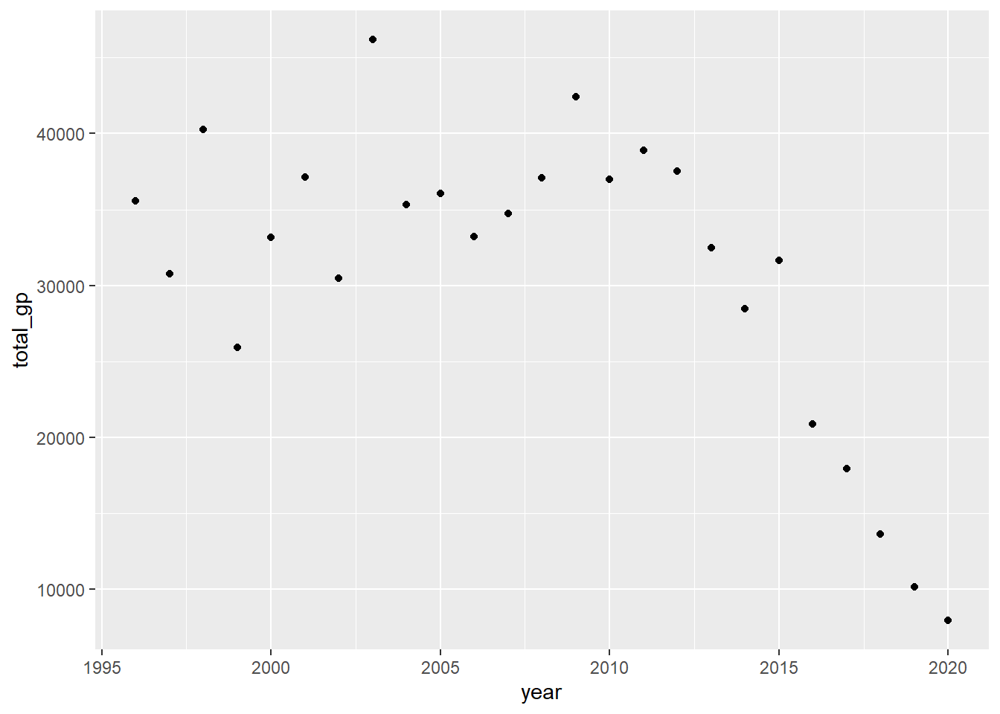
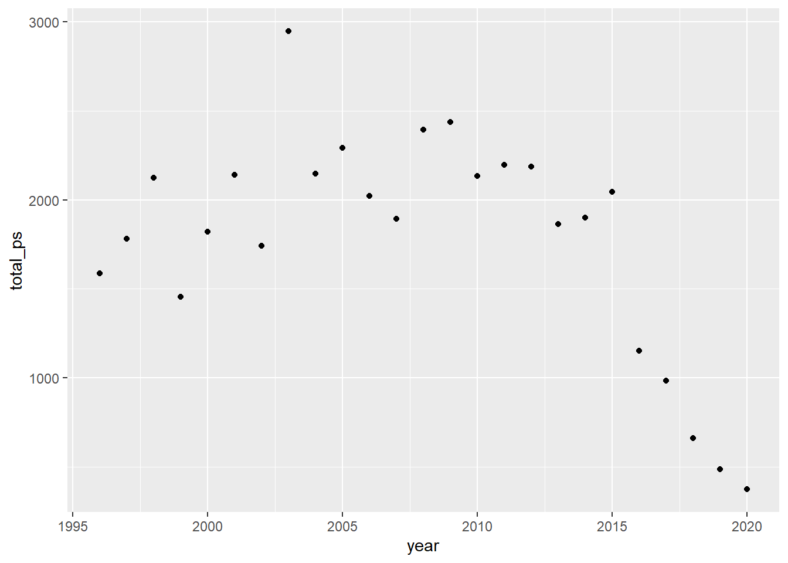

Code
# install.packages("tidyverse")
# install.packages("dplyr")
library(tidyverse)
library(dplyr)
source("functions.R") # load functions defined in prior chapters# install.packages("tidyverse")
# install.packages("dplyr")
library(tidyverse)
library(dplyr)
source("functions.R") # load functions defined in prior chaptersRight now this is just a bunch of EDA that I think is interesting. I will condense it and give it a logical flow later.
Now that we have our data imported and cleaned, we need to transform the data before modelling and visualizing it. In particular, we wish to come up with a way of utilizing the ps and gp values in such a way that does not punish players who are still playing (and thus haven’t had as many seasons to increase their point share and games played.
pick_prop <- all_data |>
group_by(year) |>
mutate(draft_gp = sum(gp),
draft_ps = sum(ps),
prop_gp = gp / draft_gp,
prop_ps = ps / draft_ps) |>
group_by(overall) |>
summarize(avg_prop_gp = mean(prop_gp),
avg_prop_ps = mean(prop_ps),
.groups = "drop") |>
pivot_longer(cols = starts_with("avg"))
ggplot(pick_prop, aes(x = overall, y = value)) +
geom_point() +
geom_smooth(formula = y ~ log(x)) +
facet_wrap(~name)`geom_smooth()` using method = 'loess'
Looking at these plots, there clearly appears to be an exponential pattern here. The games played and point share plots look quite similar, one noticeable difference is the point share one seems more spread out which makes sense since excellent players can have a significantly higher point share than good players, but they probably can’t have significantly more games played.
First, we perform some EDA to get a feel for what our data looks like. First, we want to see how many players never made the NHL (ie gp = 0), how many only played in a few games (we’ll arbitrarily say this is 50 games, just over half of an 82 game season), and how many played in over 500 games.
player_games <- all_data |>
mutate(none = ifelse(gp == 0, 1, 0),
few = ifelse(gp > 0 & gp <= 50, 1, 0),
many = ifelse(gp >= 500, 1, 0))
rates <- c(sum(player_games$none) / nrow(player_games),
sum(player_games$few) / nrow(player_games),
sum(player_games$many / nrow(player_games)))
rates[1] 0.5188870 0.1538603 0.1201400We can see that a significant portion of our dataset never played in an NHL game or only played in a few games. Let’s look at this by year:
player_games <- player_games |>
group_by(year) |>
summarize(across(none:many, sum))see how many players we have that have played in at least 1 NHL game and are not retired. This is equivalent to gp >= 1 and to == 2025 (recall when we noted in the first chapter that players who are still playing have a to value of 2025.
all_data |>
filter(gp >= 1 & to == 2025) |>
nrow()[1] 742There are 742 such players (about 13% of our dataset) who meet this criteria, and who we will have to adjust the ps and gp values for. We can see in the plot below that (unsurprisingly) most of these players were drafted recently.
player_adj <- all_data |>
filter(gp == 0) |>
group_by(year) |>
summarize(n = n())
year_stats <- all_data |>
group_by(year) |>
summarize(total_gp = sum(gp), total_ps = sum(ps))
ggplot(player_adj, aes(x = year, y = n)) +
geom_point() +
labs(title = "Number of Current Players Drafted by Year",
x = "Draft Year", y = "Number of Players")
ggplot(year_stats, aes(x = year, y = total_gp)) +
geom_point()
ggplot(year_stats, aes(x = year, y = total_ps)) +
geom_point()